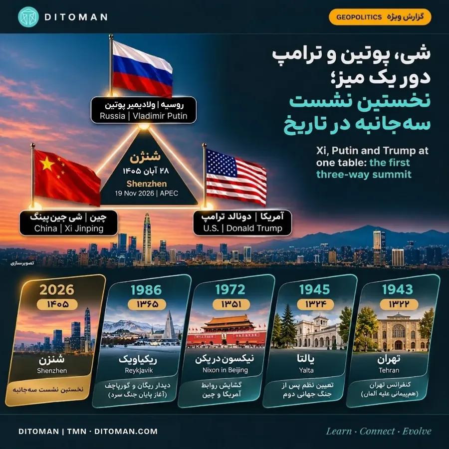
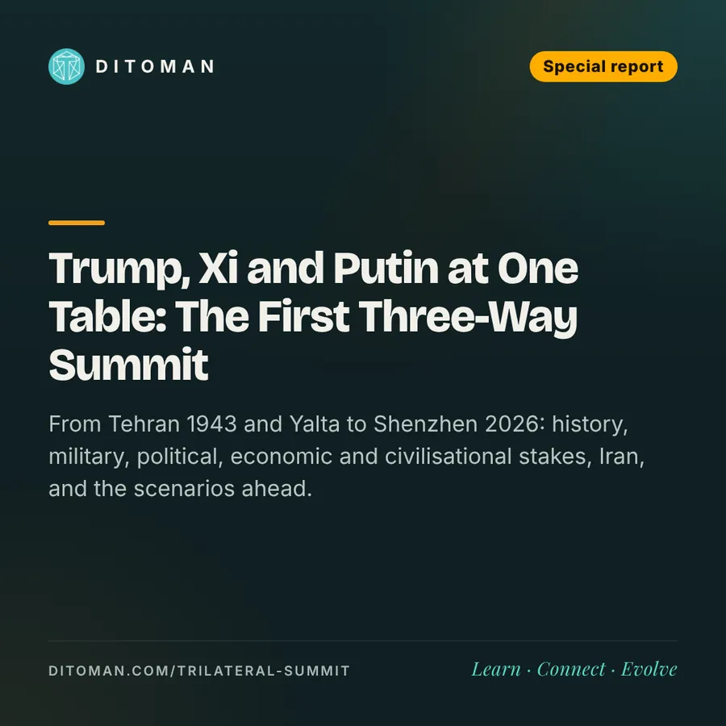

ترامپ، شی و پوتین دور یک میز؛ اولین دیدار سهجانبه در تاریخ
Trump, Xi and Putin at one table: the first three-way summit
از تهران ۱۹۴۳ و یالتا تا شنژن ۲۰۲۶: تاریخ، ابعاد نظامی، سیاسی، اقتصادی و تمدنی، جایگاه ایران و سناریوهای پیش رو.
From Tehran 1943 and Yalta to Shenzhen 2026: history, military, political, economic and civilisational stakes, Iran, and the scenarios ahead.
در یک نگاه
پنجشنبه ۲۸ آبان (۱۹ نوامبر ۲۰۲۶)، در حاشیهی اجلاس اپک در شنژن چین، دونالد ترامپ، شی جینپینگ و ولادیمیر پوتین برای اولین بار در تاریخ، سهنفره دور یک میز مینشینند. کاخ سفید، کرملین و وزارت خارجهی چین این دیدار را تأیید کردهاند.
| شاخص | توضیح |
|---|---|
| زمان و مکان | پنجشنبه ۱۹ نوامبر ۲۰۲۶، شنژن، حاشیهی اجلاس اپک |
| سابقه | اولین دیدار سهجانبهی رهبران آمریکا، چین و روسیه |
| دستور کار | از پیش توافق نشده (طبق فایننشال تایمز) |
| موضوع اصلی آمریکا | کنترل تسلیحات هستهای و جنگ ایران |
| خارج از دستور (طبق مقامهای آمریکایی) | جنگ اوکراین |
| موضع رسمی چین | «تبادل عمیق دربارهی صلح جهانی و ثبات راهبردی» |
| کلاهکهای هستهای جهان (ژانویه ۲۰۲۶، سیپری) | حدود ۱۲٬۱۸۷؛ نزدیک ۸۳٪ ذخایر عملیاتی در دست آمریکا و روسیه |
این گزارش خبری و تحلیلی است. ادعاهای طرفها، دادههای مستقل و تحلیل دیتومان جدا از هم آمدهاند.
1. چه چیزی تأیید شده است؟
- تأیید سهجانبه: کاخ سفید و کرملین در ۱۳ نوامبر، و وزارت خارجهی چین در ۱۶ نوامبر این دیدار را تأیید کردند
- پیشنهاددهنده: طبق والاستریت ژورنال، ایدهی دیدار از سوی پوتین مطرح شد (الجزیره)
- قالب: طبق فایننشال تایمز، دستور کار از پیش توافق نشده؛ چین ترجیح میداد بیانیههای آماده خوانده شود و آمریکا گفتوگوی آزادتر میخواست
- انتظار آمریکا: یک مقام ارشد آمریکایی گفته «انتظار نداریم به هیچ نوع توافقی برسیم»؛ هدف، شروع یک گفتوگوست
- توصیف چین: سخنگوی وزارت خارجهی چین، مائو نینگ، دیدار را «دارای اهمیت پیشگامانه» خواند (کرهتایمز)
2. تاریخ: آیا پیش از این چنین دیداری بوده است؟
پاسخ کوتاه: نه، دقیقاً با این سه کشور هرگز. اما تاریخ پر از دیدار قدرتهای بزرگ است که نقشهی جهان را عوض کردهاند:
| زمان | دیدار و حاضران | چه شد |
|---|---|---|
| آذر ۱۳۲۲ (نوامبر ۱۹۴۳) | کنفرانس تهران: روزولت، چرچیل، استالین | هماهنگی جنگ؛ بیانیهای دربارهی حفظ استقلال ایران |
| فوریهی ۱۹۴۵ | کنفرانس یالتا: روزولت، چرچیل، استالین | طراحی نظم پس از جنگ و سازمان ملل؛ تصمیمهایی دربارهی چین بدون حضور چین |
| ژوئیهی ۱۹۴۵ | کنفرانس پوتسدام: ترومن، استالین، چرچیل و سپس اتلی | تقسیم آلمان؛ بیانیهی پوتسدام دربارهی ژاپن |
| ژوئیهی ۱۹۵۵ | اجلاس ژنو: آمریکا، شوروی، بریتانیا، فرانسه | «روح ژنو»؛ گرم شدن فضا، بدون توافق بزرگ |
| ۱۹۷۲ | نیکسون در پکن و مسکو: دیدارهای جداگانه | «دیپلماسی مثلثی»؛ باز شدن چین و پیمانهای کنترل تسلیحات |
| ۱۹۸۶ | ریکیاویک: ریگان و گورباچف | نزدیک شدن به حذف سلاح هستهای؛ زمینهی پیمان ۱۹۸۷ |
| ۱۹۸۹ | مالت: بوش و گورباچف | نماد پایان جنگ سرد |
| ژانویهی ۱۹۹۲ | اولین نشست سران شورای امنیت: رهبران اعضای دائم و دیگر اعضا | چندجانبه، نه سهجانبه |
| ۱۹ نوامبر ۲۰۲۶ | شنژن: ترامپ، شی، پوتین | اولین دیدار سهجانبهی آمریکا، چین و روسیه |
نکتهی تاریخی برای ایران: کنفرانس تهران ۱۹۴۳ یکی از سه دیدار بزرگی بود که نظم پس از جنگ جهانی دوم را شکل داد؛ و در آن، سه قدرت بزرگ در بیانیهای به حفظ استقلال و تمامیت ارضی ایران متعهد شدند (وزارت خارجهی آمریکا، دفتر تاریخ).
2.1. درسهای هر دیدار تاریخی
- تهران، ۱۹۴۳: اولین دیدار سه رهبر بزرگ متفقین، در سفارت شوروی در تهران. تصمیم به گشودن جبههی دوم در اروپا گرفته شد و «اعلامیهی تهران» از کمکهای اقتصادی ایران به جنگ قدردانی کرد و بر استقلال و تمامیت ارضی ایران تأکید کرد
- قاهره، ۱۹۴۳: روزولت و چرچیل با چیانگ کایشک، رهبر وقت چین، دیدار کردند؛ تنها باری که چین در یکی از دیدارهای بزرگ دوران جنگ کنار قدرتهای غربی نشست، و استالین در آن حاضر نبود
- یالتا، ۱۹۴۵: تقسیم آلمان به مناطق اشغالی، طرح سازمان ملل و حق وتو، و ورود شوروی به جنگ با ژاپن در ازای امتیازهایی در شمال شرق چین؛ بدون حضور چین. به همین دلیل «یالتا» در ادبیات سیاسی، نماد تصمیم قدرتهای بزرگ دربارهی دیگران شد
- پوتسدام، ۱۹۴۵: اجرای تصمیمهای یالتا دربارهی آلمان و صدور بیانیهی پوتسدام خطاب به ژاپن؛ و آغاز شکافهایی که به جنگ سرد رسید
- ژنو، ۱۹۵۵: اولین دیدار سران شرق و غرب پس از جنگ؛ توافق بزرگی نداشت، اما «روح ژنو» نشان داد گفتوگو ممکن است
- پاریس، ۱۹۶۰: پس از سرنگونی هواپیمای جاسوسی آمریکایی یو-۲ بر فراز شوروی، اجلاس پیش از شروع واقعی فروپاشید؛ نمونهای از اینکه یک حادثه میتواند دیدار بزرگ را از بین ببرد
- پکن و مسکو، ۱۹۷۲: نیکسون ابتدا به پکن و سه ماه بعد به مسکو رفت. «دیپلماسی مثلثی» به آمریکا اجازه داد از رقابت چین و شوروی استفاده کند؛ در مسکو پیمانهای سالت ۱ و ضد موشک بالستیک امضا شد
- ریکیاویک، ۱۹۸۶: ریگان و گورباچف تا آستانهی توافق برای حذف همهی موشکهای بالستیک رفتند، اما بر سر طرح دفاع موشکی آمریکا به بنبست خوردند. با این حال، یک سال بعد پیمان موشکهای میانبرد (آیاناف) امضا شد
- مالت، ۱۹۸۹: چند هفته پس از فروریختن دیوار برلین؛ نماد پایان جنگ سرد
- نیویورک، ۱۹۹۲: اولین نشست سران شورای امنیت سازمان ملل؛ چندجانبه و در فضای خوشبینی پس از جنگ سرد
الگوی تاریخی: دیدارهای بزرگ وقتی نتیجه داشتند که پشتشان کار کارشناسی و منافع مشترک بود؛ وقتی فقط نمایش بودند، بهسرعت فراموش شدند.
3. چرا همه از «یالتای ۲» حرف میزنند؟
- یالتا چه بود: در فوریهی ۱۹۴۵، سه رهبر پیروز جنگ دربارهی آیندهی اروپا، آسیا و سازمان ملل تصمیم گرفتند؛ تصمیمهایی که دههها مرزها و حوزههای نفوذ را تعیین کرد (دفتر تاریخ)
- چرا مقایسه میشود: یک نمایندهی پارلمان روسیه این دیدار را راهی به سوی «یالتای جدید» خوانده است
- چرا رد میشود: سخنگوی کرملین گفته توافقهای شنژن را نمیتوان به دیگران تحمیل کرد. چین هم از مقایسه با یالتا پرهیز میکند؛ چون در یالتا تصمیمهایی دربارهی خاک چین بدون حضور چین گرفته شد
- تفاوت اصلی با ۱۹۴۵: آن سه رهبر، متحدان یک جنگ پیروز بودند. این سه رهبر، رقبایی هستند که منافعشان در اوکراین، تایوان، فناوری و تجارت بهشدت با هم فرق دارد
4. بعد نظامی: سه قدرت بزرگ هستهای، بدون پیمان
| کشور | کلاهکهای هستهای (برآورد سیپری، ژانویه ۲۰۲۶) |
|---|---|
| روسیه | بیش از ۵٬۰۰۰ |
| آمریکا | بیش از ۵٬۰۰۰ |
| چین | حدود ۶۲۰؛ سریعترین رشد؛ احتمالاً بیش از ۱٬۰۰۰ تا ۲۰۳۰ |
| کل جهان | حدود ۱۲٬۱۸۷ |
- پایان آخرین پیمان: پیمان «استارت نو»، آخرین پیمان کنترل تسلیحات هستهای میان آمریکا و روسیه، فوریهی ۲۰۲۶ منقضی شد و جانشینی ندارد (سیپری)
- موضع آمریکا: ترامپ پیشنهاد روسیه برای تمدید یکساله را رد کرده و یک توافق «جدید و مدرن» با حضور چین میخواهد
- موضع چین: مذاکرهی خلع سلاح سهجانبه را «نه منصفانه، نه معقول و نه واقعبینانه» میداند؛ تا وقتی آمریکا و روسیه زرادخانههای بسیار بزرگتری دارند
- فضای ممکن برای توافق کوچک: برخی تحلیلگران میگویند گفتوگوهای محدودتر، مثل خطوط ارتباط اضطراری یا حفظ کنترل انسانی بر تصمیمهای هستهای در عصر هوش مصنوعی، ممکنتر است؛ موضوعی که آمریکا و چین در ۲۰۲۴ دربارهاش توافق کرده بودند
5. بعد سیاسی: چه کسی چه میخواهد؟
| کشور | آنچه گزارش شده میخواهد |
|---|---|
| آمریکا | شروع گفتوگوی هستهای سهجانبه؛ گفتوگو دربارهی جنگ ایران؛ تصویر «معاملهگر بزرگ» |
| روسیه | نقش «اولِ برابرها»؛ طبق والاستریت ژورنال، توافقی دربارهی پایان جنگ اوکراین با شرایط مطلوب مسکو |
| چین | نمایش جایگاه برابر با آمریکا و روابط ویژه با هر دو رهبر؛ پرهیز از تصویر «یالتا» و از بحث اوکراین |
- اوکراین: مقامهای آمریکایی گفتهاند اوکراین در دستور کار نیست. رئیسجمهور اوکراین نگرانیاش را از تصمیمگیری دربارهی کشورش بدون حضور کییف اعلام کرده و شی جینپینگ، طبق گفتهی رئیسجمهور آلمان، اوکراین را «درگیری اروپایی» خوانده که اروپاییها هم باید در حلش باشند
- متحدان: اروپا، ژاپن، کرهی جنوبی و دیگر متحدان آمریکا نگراناند که دربارهی منافعشان بدون حضورشان تصمیم گرفته شود
- ادامهی ماجرا: نشست بعدی ممکن است در اجلاس گروه ۲۰ در میامی، دسامبر ۲۰۲۶، باشد. یک تحلیلگر روس گفته اگر تا کریسمس نتیجهی ملموسی نباشد، این دیدار «فقط یک عکس یادگاری» بوده است
6. بعد اقتصادی و مالی
- وزن اقتصادی: سه کشور با هم، بر پایهی دادههای صندوق بینالمللی پول، حدود ۴۰ تا ۴۵ درصد تولید ناخالص اسمی جهان را در اختیار دارند
- تجارت: آمریکا و چین سال گذشته یک جنگ تجاری کوتاه را پشت سر گذاشتند؛ هر پیامی دربارهی تعرفهها، تراشهها و مواد معدنی کمیاب، بر زنجیرههای تأمین جهان اثر میگذارد
- انرژی: جنگ ایران و اختلال در تنگهی هرمز، به گفتهی منابع بینالمللی، بزرگترین اختلال عرضهی نفت در تاریخ بازار را رقم زد؛ هر نشانهای از پیشرفت یا بنبست در این موضوع، مستقیم روی قیمت نفت اثر دارد
- بازارها: طلا، نفت، دلار، یوآن و روبل همه به نتیجهی این دیدار حساساند؛ این هفته، همزمان با سخنرانی رئیس فدرال رزرو، گزارش انویدیا و عرضهی اولیهی آنتروپیک، بازارها با حساسیت بالایی روبهرو هستند
- تحریمها: هر تغییری در رابطهی آمریکا و روسیه، میتواند روی تحریمهای نفتی و مالی روسیه و بازار انرژی جهان اثر بگذارد
7. بعد تمدنی و نظم جهانی
سه کشور، سه روایت متفاوت از جهان دارند:
- آمریکا: نظمی که از ۱۹۴۵ با اتحادها، دلار و نهادهای بینالمللی ساخت؛ و حالا رویکردی معاملهمحورتر
- چین: تمدنی چندهزارساله که خود را صدای «جنوب جهانی» و طرفدار جهانی چندقطبی میداند
- روسیه: قدرتی که میخواهد جایگاه خود را بهعنوان یکی از قطبهای اصلی جهان دوباره تثبیت کند
پرسش بزرگ این است: آیا جهان به سمت نظمی چندقطبی میرود که در آن، چند قدرت بزرگ دربارهی قواعد بازی با هم حرف میزنند؛ یا این دیدار فقط نمایشی از رقابت است؟ بیشتر تحلیلگران معتقدند ترس از یک «گروه سهگانه» که جهان را تقسیم کند، اغراقآمیز است؛ چون منافع سه کشور بیش از آن متفاوت است (تحلیل الجزیره).
8. ایران کجای این معادله است؟
- در دستور کار: طبق مقامهای آمریکایی، ترامپ قصد دارد جنگ ایران را با شی و پوتین مطرح کند
- وضعیت فعلی: توافق موقت خرداد ۱۴۰۵ (ژوئن ۲۰۲۶) با میانجیگری پاکستان، توقف درگیریها و بازگشایی تنگهی هرمز را پیشبینی کرده بود؛ اما دو طرف یکدیگر را به نقض آن متهم میکنند و موضوع برنامهی هستهای، تنگهی هرمز و تحریمها هنوز حلنشده است
- نقش چین و روسیه: چین بزرگترین خریدار نفت ایران بوده و روسیه شریک سیاسی و نظامی تهران؛ هر دو، روابط مهمی هم با آمریکا دارند. همین، آنها را به بازیگرانی تأثیرگذار در هر راهحل احتمالی تبدیل میکند
- آنچه برای مردم ایران مهم است: پایان درگیریها، امنیت تنگهی هرمز، ثبات اقتصادی و کاهش فشار تورم و نرخ ارز؛ هر قدمی در جهت کاهش تنش، برای زندگی روزمره و کسبوکارها اهمیت حیاتی دارد
دیتومان در این گزارش از هیچ طرفی جانبداری نمیکند و فقط مواضع اعلامشده و دادههای منابع معتبر را آورده است.
8.1. واکنشها و نگاه تحلیلگران
- کرملین: سخنگوی کرملین دیدار را «بسیار مهم» خوانده، اما گفته توافقهای آن را نمیتوان به کشورهای دیگر تحمیل کرد و مقایسه با یالتا را رد کرده است
- اوکراین: رئیسجمهور اوکراین گفته «یالتای دوم، سوم یا چهارم» را نمیپذیرد
- اروپا و متحدان آسیایی آمریکا: نگراناند دربارهی منافعشان بدون حضورشان تصمیم گرفته شود
- نگاه «اولِ برابرها»: یک تحلیلگر روس میگوید روسیه میخواهد در این جمع «اولِ برابرها» دیده شود و نتیجهی واقعی ظرف حدود یک ماه روشن میشود
- نگاه «معاملهگر»: برخی تحلیلگران غربی این دیدار را بخشی از تصویر ترامپ بهعنوان «معاملهگر بزرگ» میدانند و ترس از «گروه سهگانه» را اغراقآمیز میخوانند
- نگاه چینی: تحلیلگران نزدیک به پکن، چین را «تسهیلگری بیطرف» توصیف میکنند که نمیخواهد مسئولیت رویدادهای نامطمئن را بپذیرد
9. سناریوهای پس از دیدار
| سناریو | چه اتفاقی میافتد | نشانهها |
|---|---|---|
| ۱. عکس یادگاری | دیدار نمادین، بدون توافق ملموس | بیانیههای کلی، بدون سازوکار پیگیری |
| ۲. شروع یک مسیر | توافق بر سر ادامهی گفتوگوی هستهای، خطوط ارتباط اضطراری یا کارگروه مشترک | اعلام نشست بعدی، احتمالاً در گروه ۲۰ میامی |
| ۳. پیشرفت در بحرانها | گامهایی برای کاهش تنش در خاورمیانه یا امنیت کشتیرانی در هرمز | اطلاعیههای مشترک یا جداگانه دربارهی ایران و هرمز |
| ۴. بنبست و تنش | اختلاف آشکار بر سر اوکراین، تایوان یا تجارت | لغو بخشهایی از دیدار، لحن تند پس از نشست |
به گفتهی مقامهای آمریکایی و بیشتر تحلیلگران، سناریوی اول و دوم محتملترند. یک تحلیلگر روس گفته نتیجهی واقعی، ظرف حدود یک ماه روشن میشود.
9.1. پنجشنبه و بعد از آن، چه چیزهایی را دنبال کنیم؟
- آیا بیانیهی مشترک صادر میشود یا هر کشور جداگانه روایت خودش را میگوید؟
- آیا کارگروه یا نشست بعدی برای گفتوگوی هستهای اعلام میشود؟
- دربارهی ایران و تنگهی هرمز چه گفته میشود؟
- واکنش قیمت نفت، طلا و دلار در روزهای بعد
- نشست احتمالی بعدی در گروه ۲۰ میامی، دسامبر ۲۰۲۶
10. برای کسبوکارها و سرمایهگذاران چه معنایی دارد؟
- نوسان کوتاهمدت: خبرهای این دیدار، بهویژه دربارهی ایران، هرمز و تحریمها، میتواند در کوتاهمدت روی نفت، طلا و ارز اثر بگذارد
- منتظر جزئیات بمانید: تیترها معمولاً بزرگتر از نتیجهها هستند؛ بیانیههای رسمی و قدمهای بعدی مهمتر از عکسها هستند
- مدیریت ریسک: در هفتههای پرخبر، تصمیمهای بزرگ مالی بر پایهی شایعه، ریسک بالایی دارد
این گزارش توصیهی سرمایهگذاری یا سیگنال خرید و فروش نیست.
11. نگاه دیتومان
تاریخ نشان میدهد دیدار قدرتهای بزرگ همیشه یک معنا ندارد: یالتا نقشهی جهان را کشید، ژنو فقط فضا را گرم کرد و ریکیاویک بینتیجه به نظر رسید، اما راه پیمان بعدی را باز کرد.
گفتوگو میان رقبا، حتی بدون توافق، از سکوت میان آنها کمخطرتر است.
برای ایران و منطقه، معیار موفقیت این دیدار ساده است: آیا قدمی به سوی کاهش تنش، امنیت هرمز و ثبات اقتصادی برداشته میشود یا نه. پاسخ را باید در هفتههای بعد دید، نه در عکسهای شنژن.
بیشتر بخوانید
منابع
- Al Jazeera: What a Trump-Xi-Putin summit could mean, and what it wouldn’t (6 Nov 2026)
- Korea Times: China confirms discussions on historic Xi-Trump-Putin meeting
- SCMP: Will Xi, Trump and Putin meet at APEC? First they must agree an agenda
- Kyiv Independent: Kremlin signals possible three-way meeting at APEC
- SIPRI Yearbook 2026 press release: world nuclear forces
- US Office of the Historian: The Tehran Conference, 1943
- US Office of the Historian: The Yalta Conference, 1945
- US Office of the Historian: Rapprochement with China, 1972
آخرین بازبینی: ۲۵ آبان ۱۴۰۵، پیش از برگزاری دیدار. این گزارش خبری و تحلیلی است، از هیچ طرفی جانبداری نمیکند و توصیهی سرمایهگذاری نیست.